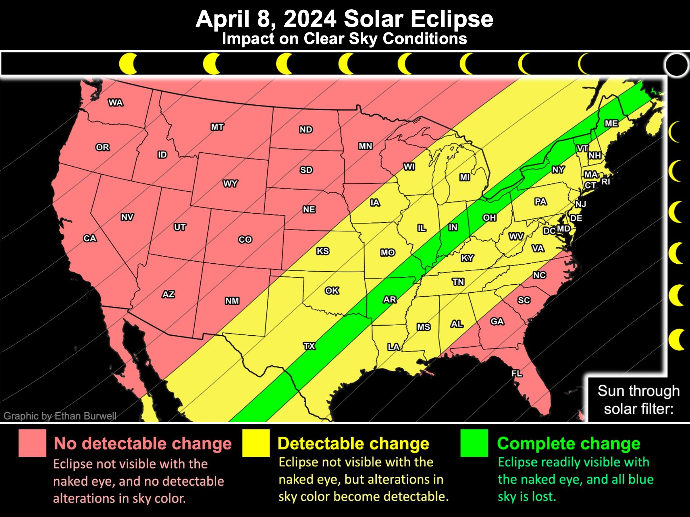
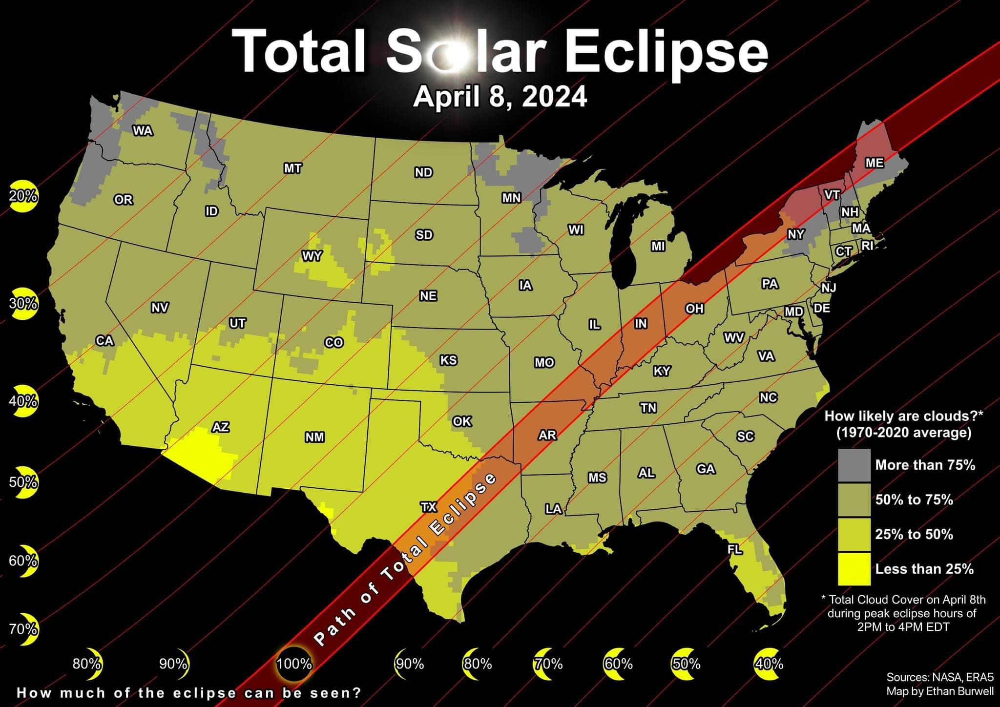

April 2024 Solar Eclipse
Last updated: 8:00PM Friday February 23, 2024
What is a solar eclipse?
A solar eclipse is when the moon passes between the sun and Earth, blocking part or all of the sun's light from reaching the Earth's surface. If only part of the sun's disk is blocked by the moon, it is called a partial or annular solar eclipse. If all of the sun's disk is blocked by the moon, it is called a total solar eclipse.Why is this eclipse special?
This eclipse is only the second total solar eclipse to cross the United States in over 40 years. It will also be the last total solar eclipse t cross the United States until 2045.What will the eclipse look like?
How can I see the eclipse?
answerWill there be clouds?
It is too early to forecast which places will experience cloudy skies on eclipse day. However, based on the past 50 years, we can identify the regions that are most likely to experiences cloudy skies during the eclipse. In the US, the Pacific Northwest, the northern Plains, and northern New York and New England typically experience the cloudies conditions on April 8th. Historically, these areas average more than 75% cloud cover. KingstonSnows | Kingston, New York
Website built by Ethan Burwell